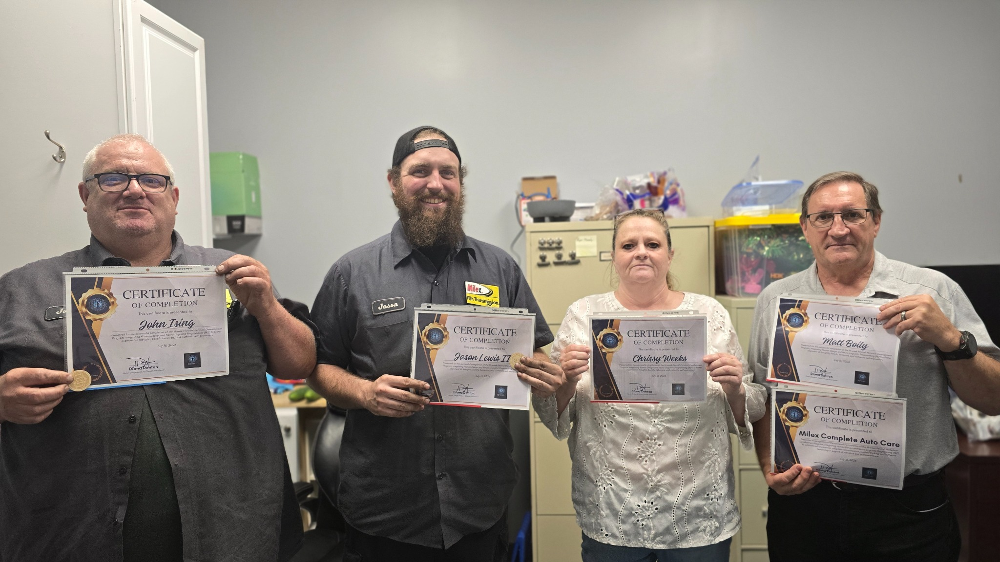

A stronger workplace starts with people who understand how they operate.
Employees do not leave their beliefs, communication habits, assumptions, insecurities, stress responses, or personal patterns at the door when they arrive at work. Those patterns quietly shape everything that happens once they're there.
Unbecoming at Work helps employees develop the self-awareness necessary to recognize patterns that interfere with their effectiveness and strengthen the behaviors that allow them to contribute more confidently and constructively.
The work is not generic corporate training. Programs are customized after meeting with the business owner, leadership team, or Human Resources representative to understand organization size, team structure, communication challenges, leadership concerns, customer-service demands, workplace culture, and business objectives. From there, Diana builds a development plan appropriate to the actual organization.
Better performance is difficult to sustain when the people doing the work are operating from stress, misunderstanding, low confidence, or patterns they don't recognize.
UBD @ Work develops the person behind the position.
Built Around The Actual Organization
This work is not therapy, and it does not replace clinical or mental-health support.
MDDR Enterprises

"Working with Diana Denton of Unbecoming by Design Coaching (formerly Rewire Coaching) has been one of the best investments we've made in our team. Diana worked with us both as a group and one-on-one, helping each team member better understand themselves, improve communication with one another, and strengthen the way we communicate with our customers. Rather than simply teaching communication techniques, she guided us through a journey of self-awareness, accountability, and personal growth. The results have been nothing short of remarkable — stronger teamwork, more productive conversations, increased confidence, and a renewed commitment from every member of our organization to become better professionals and better people. If you're looking to improve team dynamics, leadership, customer communication, or build a stronger organizational culture, I highly recommend Diana Denton and Unbecoming by Design Coaching (formerly Rewire Coaching)."— Matt, MDDR Enterprises | Columbus, Ohio
Testimonial reflects the client's prior engagement with Diana Denton under the Rewire Coaching name, now operating as Unbecoming By Design™.
Its development program should be too.
Before recommending a program, Diana meets with the owner, leadership team, or Human Resources representative to understand the people, challenges, structure, and outcomes that matter most to the organization. From there, UBD @ Work is built around the actual needs of the business — not a one-size-fits-all training package.
Start A Business Conversation